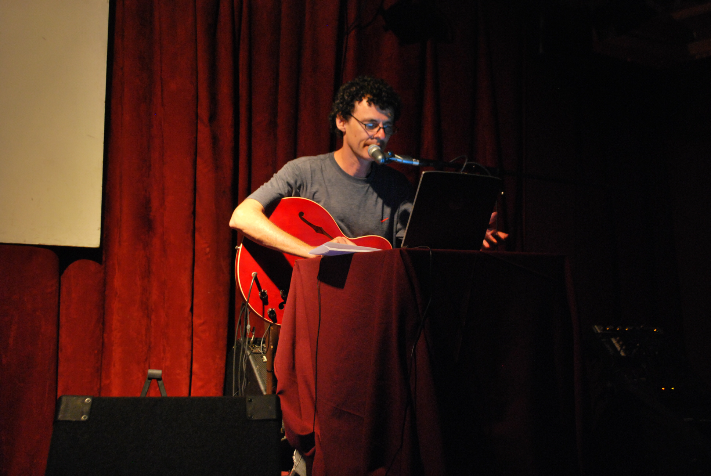
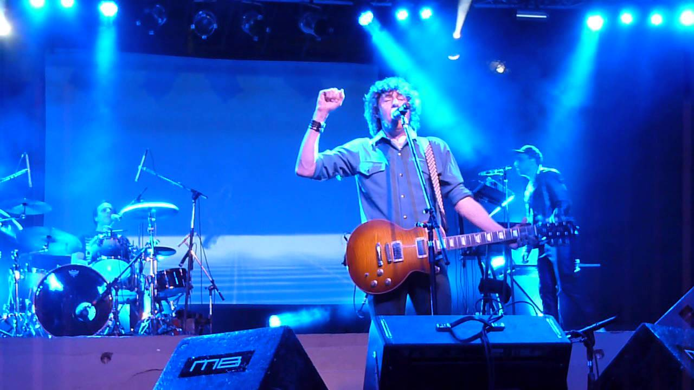

2004-presente: la vuelta de la popularidad y nuevos enfoques:
Después de 4 años de inactividad en lo que a lanzamientos se refiere, en 2004 es editado El Cuarteto de Nos. El disco contaba con 18 temas: 3 temas nuevos: («No quiero ser normal», «Fui yo» y «Hay que comer») y 15 reversiones de temas antiguos. Las nuevas versiones están mucho más próximas al género rock que las originales. La producción de Juan Campodónico es fundamental para el éxito del disco, logrando que el disco suene verdaderamente bien y por fin lineal. Este disco logra poner al grupo nuevamente dentro de los más escuchados del país y consigue además atraer la atención de ciertas partes del exterior. Una muestra del éxito es su festejo de los 21 años del grupo (en 2005), cuando llenan algunas salas de teatro del Uruguay en varias oportunidades.

La popularidad del grupo se ve aún más incrementada con la salida del disco Raro en mayo del año 2006. Musicalmente sigue la misma estructura que el disco El Cuarteto de Nos, es decir, un rock más distorsionado que en sus comienzos. Este disco también fue producido por Campodónico. Contiene 12 canciones (dos de Santiago Tavella, una de Ricardo Musso y nueve de Roberto Musso). Lo que llama la atención de este disco son las letras, que son más largas y rapeadas, y con juegos de palabras llevados hasta lo obsesivo. Si bien son sarcásticas y ácidas, son más verosímiles, serias y reflexivas que en sus discos anteriores. Mezclando el rock con el hip-hop y el rap, crearon un modo de composición que los caracterizaría desde este disco hasta la actualidad. Contiene sus más grandes éxitos como «Yendo a la casa de Damián» (canción que fue nominada en el 2007 al Grammy Latino), «Pobre papá», «Ya no sé que hacer conmigo» e «Invierno del 92».
En el 2007, El Cuarteto de Nos promociona su último trabajo por todo el continente, realizando presentaciones tanto en el Festival Vive Latino en México, como en los festivales Rock al Parque en Colombia y Quito Fest en Ecuador. En el 2008, participan en el Pepsi Music 2008, un enorme festival de Argentina, junto a otras grandes bandas y solistas. En la segunda mitad del año anuncian su nuevo disco el cual saldría entre marzo y los primeros días de abril. El día 27 de mayo de 2009, en medio de la producción de Bipolar, trascendió que Ricardo Musso mantendría diferencias artísticas y administrativas con el rumbo que habría tomado la banda. Majareta Producciones, quien se encarga de la gestión y la comunicación del grupo, habría informado que la banda «no se separa ni disuelve» pero que sufrirá «un cambio de estructura». El bajista de la banda Santiago Tavella, declaró: «El Cuarteto de Nos no se separa, pero Riki Musso se va».
En vista del lanzamiento de Bipolar, planificado finalmente para los primeros días de junio, Tavella aclaró: «Ya estamos viendo a otra gente para reemplazar a Riki, porque Bipolar es un disco muy sofisticado. La idea es hacer una especie de cambio que incluiría a dos personas más, aunque todavía no tenemos muy definido a quiénes». Con la salida de Riki Musso, se adhirieron dos nuevos instrumentalistas a la banda: Gustavo «Topo» Antuña —de Buenos Muchachos— en guitarra y Santiago Marrero en teclados. El disco Bipolar sigue lo que Raro comenzó. Musicalmente se destaca por ser mucho más electrónico —a comparación de Raro—, las letras en este disco se meten de lleno en el género rap y que no cuentan historias, sino que describen personalidades muy fuertes. El disco lleva doce canciones —igual que en el anterior disco: una de Riki, dos de Santiago y nueve de Roberto— y entre esas canciones está «El hijo de Hernández», el cual sería el nuevo hit de la banda, además de otros temas como «Miguel gritar» y la nueva versión de «Me amo». Bipolar los haría tan conocidos en toda Latinoamérica que fueron invitados en muchos festivales de varios países. El disco cuenta nuevamente con la producción de Juan Campodónico. En el año 2010, el grupo brinda un concierto por primera vez en el histórico Palacio del Boxeo en Argentina, conocido como Luna Park. El show contó con la participación de Fernando Santullo en «Mírenme», y el productor de la banda, Juan Campodónico, en «El hijo de Hernández» y «Yendo a la casa de Damián». El álbum ganó un premio Graffiti en junio de 2010. Otras importantes actuaciones fueron en el festival Nem Catacoa en Colombia los días 9 y 10 de octubre, donde participaron Green Day, Jamiroquai, The Bravery y Don Tetto, entre otros. También en 2010 fueron invitados en Cosquín Rock y en 2011 volvieron al Pepsi Music.
Porfiado contiene 12 canciones. Diez de los temas fueron escritos por el principal compositor, el cantante Roberto Musso, y dos por el bajista Santiago Tavella. Este es el primer disco que graban los 5 integrantes que conforman la nueva alineación de la banda. Según Roberto Musso, Porfiado completa la trilogía que comenzó con Raro y continuó en Bipolar, pero tiene vida propia. "Es lo mejor de Raro y Bipolar, pero modernizado", los personajes del disco son obsesivos, con objetivos entre ceja y ceja, pero además tercos y negativos de una manera inocente. Con letras mucho más ambiguas, son raps menos largos y más cantados, exploran lugares nunca pisados por la banda hasta ese entonces como el lado emocional, dejando un poco de lado en varias canciones el humor, pero sin borrar esa marca de agua que el grupo portaba hasta entonces de la ironía. En cuanto al sonido, se hace el balance entre lo electrónico, el pop, y lo roquero, llevándolo al nivel de los tiempos actuales (hasta se animaron con un estribillo con un exagerado auto-tune). Porfiado fue masterizado en Los Ángeles y salió a la venta bajo el sello Warner en Uruguay, Argentina y Chile simultáneamente el 25 de abril de 2012, y a partir de esa fecha en otros países como España, México y Brasil.
Además se presentaron por segunda vez en el estadio Luna Park (Buenos Aires), el 22 de junio de 2012, con un estadio colmado. Luego también realizaron otros shows en el interior del país y en Uruguay, en donde hicieron dos presentaciones con entradas agotadas en el Teatro de Verano. A su vez, Porfiado se ha presentado en otros países de Latinoamérica como Perú, Colombia, Venezuela, México, Brasil, etc.
El jueves 15 de noviembre, la banda se ha trasladado a Las Vegas por dos nominaciones al Grammy Latinos edición 2012 (Mejor disco pop rock - Porfiado y Mejor canción rock - "Cuando sea grande"). El Cuarteto de Nos logró ganar ambos premios, convirtiéndose en la primera banda uruguaya en ganar un Grammy latino dentro del género rock.
El día 9 de abril del 2013, El Cuarteto de Nos estrenó la canción «Un poco de acción», un jingle encargado por la radio argentina Rock&Pop, compuesta por Roberto Musso quien, inspirado por el nombre de la emisora, mezcla sonidos de rock y de pop en el tema, dejando el sello característico en él de las rimas continuas. El 17 de mayo, del mismo se lanzó la serie-web Cuarteto vs Cuartetitos, que cuenta la historia de como los alter-egos de la banda (con forma de muñecos), llamados "Macacos", cobran vida e intentan usurpar sus puestos. El 31 de mayo la banda hizo su tercera presentación en el Luna Park, con una propuesta renovada en el setlist, re-versionando algunos viejos clásicos y culminando en el mismo show la historia de "Los Cuartetitos".
El Cuarteto de Nos se presentó por primera vez en su historia en el Velódromo Municipal de Montevideo el 27 de octubre, continuando la serie Cuarteto vs Cuartetitos con una segunda temporada de la serie-web, para finalizar la gira del disco Porfiado. Luego de tener un verano (en 2014) repleto de toques en diversos festivales de, principalmente, Uruguay y Argentina, la banda hizo otro jingle para otro programa de radio llamado «10 años no es nada», encargado para el programa Segunda Pelota como celebración a sus diez años de estar al aire. La banda hizo dos conciertos en La Trastienda (Uruguay) el 8 y 9 de mayo, con localidades agotadas, mientras que en Argentina hicieron su primer show en el Gran Rex (Argentina) el 17 de ese mismo mes, agotado también, a modo de celebración de los 30 años del grupo, un cierre final para la trilogía de Raro, Bipolar y Porfiado, y una revisión a los temas más antiguos que sorprendió a los fanáticos de la vieja escuela.
Habla tu espejo salió a la venta el 15 de octubre de 2014 producido, como sus precedentes, por Juan Campodónico y bajo el sello de Warner Music. Es el segundo CD grabado por la nueva alineación de cinco integrantes.
Este disco traza un nuevo camino en cuanto a composición de las letras y música que están guiadas hacia un lado más personal, emocional, dejando el humor atrás, y con un sonido más pop, con arreglos sofisticados encarados por un lado más melódico aunque sin dejar la verborragia y el rap en las letras.
El álbum contiene diez temas, entre ellos «Cómo pasa el tiempo», «El aprendiz», «No llora» (dedicada por Roberto Musso a su hija Federica), «De hielo», «Roberto», «21 de septiembre» (referencia al día internacional del Alzheimer, enfermedad que sufre la madre de Roberto Musso y su abuela que también lo padeció), «Whisky en Uruguay» (versión libre de Santiago Tavella de la canción irlandesa «Whiskey in the jar» y quizás el tema que contiene más humor del disco), «Habla tu espejo», «Caminamos» y «Un problema menos».
Apocalipsis zombi salió a la venta el 12 de mayo de 2017, y es el primero en ser producido por el músico argentino Cachorro López —exintegrante de Los Abuelos de la Nada— y bajo el sello de Sony Music Argentina. Es el tercer CD grabado por la nueva alineación de cinco integrantes.
El disco trata de una suerte de bestiario, un catálogo de criaturas extrañas y personajes ficcionales. Según comento Roberto Musso, el único compositor del disco, el apartado lírico entrará en el género de "realidad fantasiosa", ya que explora tópicos del mundo real a través de estos seres entre los que habrá zombis, gauchos con superpoderes, bestias convertidas en humanos, hombres invisibles, etc. En cuanto a lo musical es una amalgama de diversos estilos, entre los cuales hacen presencia un rock más clásico, un ritmo melódico más presente en las canciones destacadas y un uso más particular de la posproducción. La lírica, haciendo retrospectiva, hace énfasis en temas muy personales («El Innombrable» critica la estigmatización injustificada hacia un dichoso innombrable, es una crítica la capacidad que tenemos para visualizar mal a alguien por cosas que posiblemente no ha hecho; «Mirada de nylon» habla de una hipocresía y sobre vivir en una realidad fantaseada; «Nombres» habla sobre un sujeto que ha bautizado a varias desdichas de su propio ser y al final las confunde con su mayor virtud, su valor) y en ocasiones autorreferenciales (en un concierto se confirmó que «Calma Vladimir» es una secuela a «Buen día Benito», y «Hola Karma» cierra dicha historia con una reflexión). También cabe aclarar la notoria diferencia entre las alarmas introductoria de la canción homónima al álbum y la lírica optimista y alegre de «El rey y el as».
Antes de la salida de Apocalipsis zombi se adelantaron dos canciones, «Invisible», en el marco del cierre de la gira que presentaba Habla tu espejo, y el primer sencillo, «Gaucho Power», cuyo lanzamiento tuvo lugar junto a su videoclip el día 17 de febrero. El segundo sencillo, fue el tema homónimo del álbum y fue de dominio público en abril de 2017.
El álbum fue lanzado el viernes 16 de agosto de 2019 y contiene nueve canciones en total. Antes de la salida del disco se adelantaron dos canciones: el primer sencillo, «Punta Cana», fue estrenado junto al videoclip el 29 de marzo de 2019, y el segundo sencillo, «Contrapunto para humano y computadora», fue estrenado junto al videoclip el 28 de junio de 2019. En el día del lanzamiento del álbum fue lanzado el sencillo y videoclip de «Mario Neta». El álbum fue presentado en Buenos Aires el 20 de septiembre del mismo año en el Luna Park, y el mismo año el 28 de septiembre en el Antel Arena de Montevideo. Debido a la pandemia de COVID-19, la gira promocional del disco se vio frenada para algunos países de Latinoamérica. A la fecha, los conciertos aún están pendientes.
En septiembre de 2021, mediante sus redes sociales, la banda demostró que están preparando nuevo material de estudio. El 23 de septiembre lanzarían el video musical de «Fiesta en lo del Dr. Hermes» en YouTube. En febrero de 2022 lanzarían el segundo sencillo de lo que será su próximo material de estudio, llamado «La ciudad sin alma». Fue lanzado por medio de un conversatorio con el arquitecto y artista visual Alfredo Ghierra vía YouTube.
Más tarde, en mayo de 2022 lanzarían su nuevo sencillo, «Maldito show», el cual primero fue lanzado por medio de un vídeo en el que se parodiaba un noticiero, con varias referencias a otros temas del Cuarteto; luego, fue subido un video con las letras de la canción acompañadas de imágenes y animaciones acordes con la letra del tema. En lo referente al disco, en una entrevista con el medio argentino Clarín en el marco del festival Quilmes Rock 2022 Roberto Musso aseveró que el nuevo disco del Cuarteto de Nos saldría en julio y bajo el nombre de Lámina Once.
Por último, el 7 de julio de 2022, un día antes de la publicación del álbum, se estrenaría «Rorschach», canción en la que se hace referencia al Test de Rorschach, creado por el psiquiatra y psicoanalista suizo Hermann Rorschach.
Antes de la publicación del disco, en el sitio web Genius.com había sido filtrada la lista de canciones, así como la letra de algunos de los temas del disco (además de los lanzados como sencillos).
El 8 de julio de 2022 se lanzó Lámina Once, el decimoséptimo trabajo de estudio del grupo y el primero en ser lanzado por la discográfica independiente Porfiado Records. Con 8 canciones y 33 minutos de duración, es el quinto álbum de estudio grabado por la alineación de 5 integrantes. Fue producido por Eduardo Cabra (ex Calle 13) y Héctor Castillo, dos de los productores de Jueves.
Desde finales de julio y hasta mediados de noviembre el grupo estará en una gira latinoamericana, destacando presentaciones en el Movistar Arena de Bogotá y Movistar Arena Buenos Aires, el Teatro Metropólitan de Ciudad de México,el Teatro Coliseo de Santiago de Chile, el Antel Arena de Montevideo y la participación en el Festival Tecate Coordenada de Guadalajara (México).